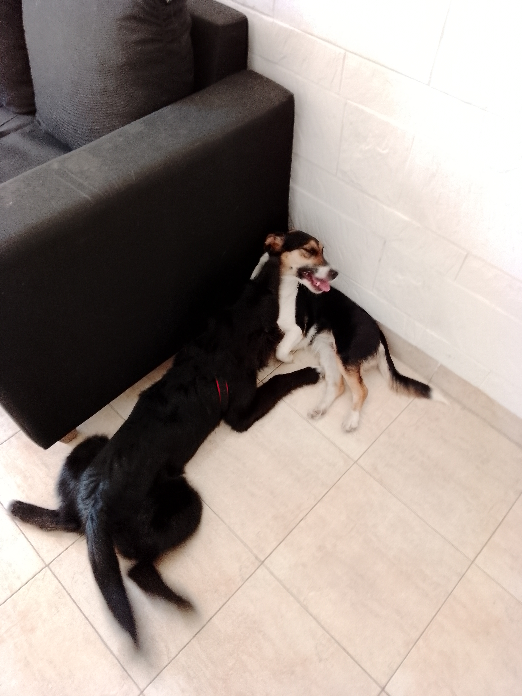
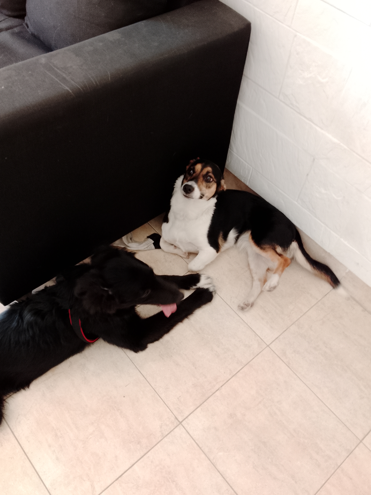
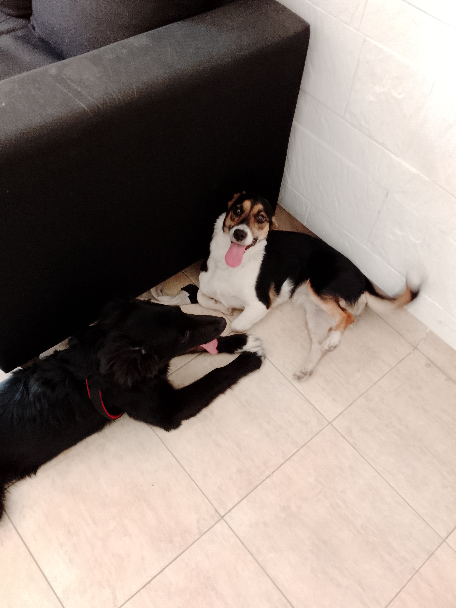

¡Hola! Soy Pucky, una Border Collie de 7 meses con mucha mucha energía, ganas de cariños y jugar.
Estos son algunos de mis trucos
Giro
Sentada
Patita
Abajo

Mi amigo Ignacio me enseñó que cuando escucho "gira" tengo que dar una vuelta de 360°.

Cuando escucho "sentada", las ganas de sentarme me ganan. ¡Maldito conductismo!

Al escuchar "patita" y ver que me dan la mano pongo mi patita. Parece que está bien, siempre me felicitan.

Este truco me aburre. Cuando escucho "abajo" me tiro al piso y nada más, que pereza.
Cosas que me gustan hacer en mi día a día
Me gustan muchas cosas, entre esas salir a pasear, aprender trucos nuevos, salir a jugar con mi hermana de otra madre Nia. Oh, claro. A continuacion dejo unas fotos
  